plot(bottle_data_with_years$T_degC, bottle_data_with_years$ChlorA,
type="p",
pch=19,
col=adjustcolor("blue", alpha.f=0.5),
ylim=c(0, 40),
xlim=c(5, 27),
main="Scatter Plot of Chlorphyll vs Temperature",
xlab="Temperature (Celsius)",
ylab="Chlorophyll (micrograms per liter)")CS670 Project - Abie Safdie
The CalCOFI Dataset
The CalCOFI (California Cooperative Oceanic Fisheries Investigations) dataset tracks oceanic data off the coast of California. It is jointly managed by NOAA’s Fisheries Service, the California Department of Fish & Wildlife, and various academic institutions. (https://calcofi.org/data/oceanographic-data/bottle-database/)
The data is retrieved via bottle samples dropped at various depths at different oceanic locations. These samples retrieve data on many different indicators of ocean health. For example, CO2 measurements, pH levels, nutrient densities (e.g. phosphate, nitrite, ammonium, etc), ocean temperatures, oxygen saturations, and plankton levels.
The CalCOFI dataset is managed with the intent to monitor the ocean’s overall health and the health of coastal marine ecosystems.
Currently, CalCOFI is still collecting and publishing data, however, the data I retrieved from Kaggle has data from 1949 to 2016. Hence, those are the years of data that I have used in this project.
Below is a visual (all visualizations were created by me using R, unless stated otherwise) of the locations off the coast of California where data samples were taken.
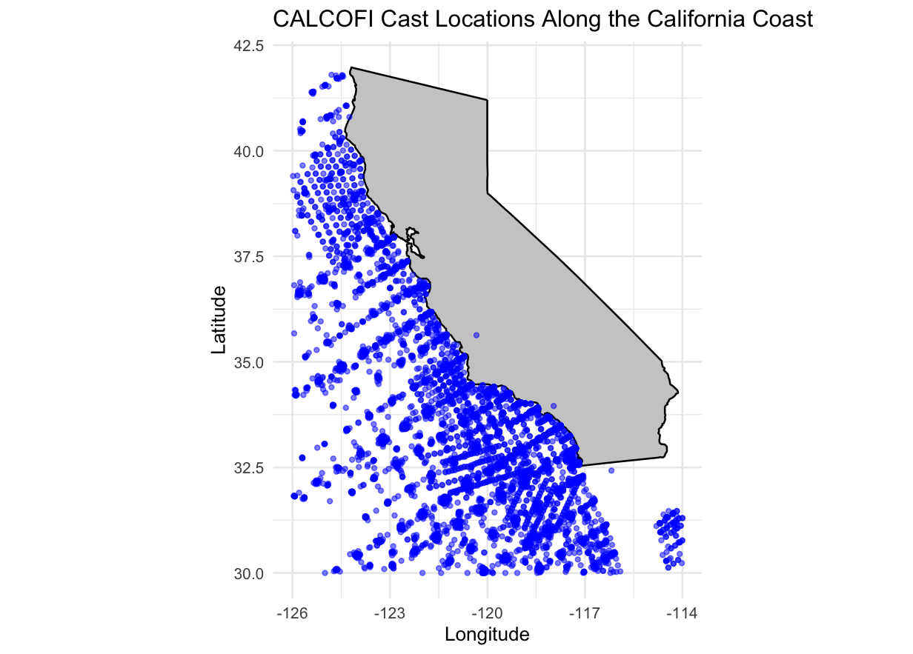
Questions
According to NASA, the ocean’s are warming at an unprecedented rate due to human-caused greenhouse gas emissions. Notably, about 90 percent of global warming is occuring in the ocean. (https://climate.nasa.gov/vital-signs/ocean-warming/?intent=121)
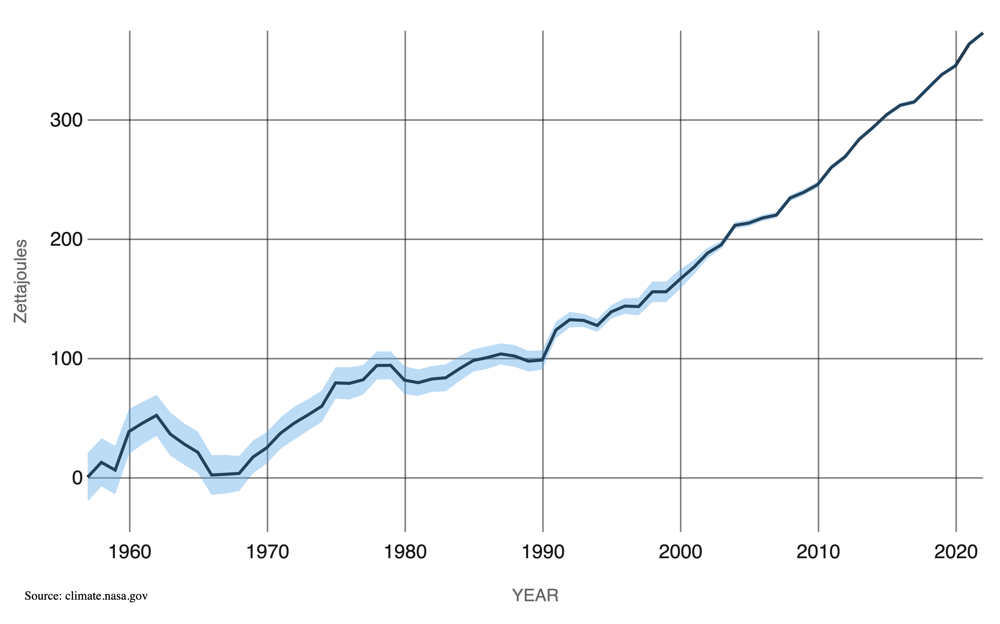
This increase in ocean tempereature raises the question as to what effect this will have on the health of the ocean and its ecosystems.
Accordingly, the CalCOFI dataset tracks one of the most important indicators of ocean health: Chlorophyll-A levels. Chlorophyll-A is the pigment associated with phytoplankton, which is a keystone species and primary producer in marine ecosystems. On top of being a keystone species in local ecosystems, plankton absorb roughly 30-50 percent of all carbon emitted by humans, making them the largest carbon sink in the world (https://pubmed.ncbi.nlm.nih.gov/24311124/). Therefore, it is of critical importance that plankton levels remain within a healthy range for marine – and land-based – ecosystems to be healthy.
As a result, this project intends to answer a few questions regarding the relationship between ocean temperature, plankton levels, and other nutrients.
More specifically these are:
- How does the amount of plankton change with respect to temperature?
- How does this impact oxygen and nutrient levels?
- Can we form a model that can accurately predict plankton levels?
- How does the level of nutrients change with temperature?
- How does the primary productivity rate change with plankton and temperature levels?
Further, I hypothesize that with an increase in ocean temperature, the amount of plankton will decrease and the amount of productivity and nutrients in an ecosystem will also decline.
Visualizations
Given the questions I am attempting to answer, below are several important visualizations that provide insightful context on the CalCOFI dataset.
First, I plotted plankton levels with respect to ocean temperautre.
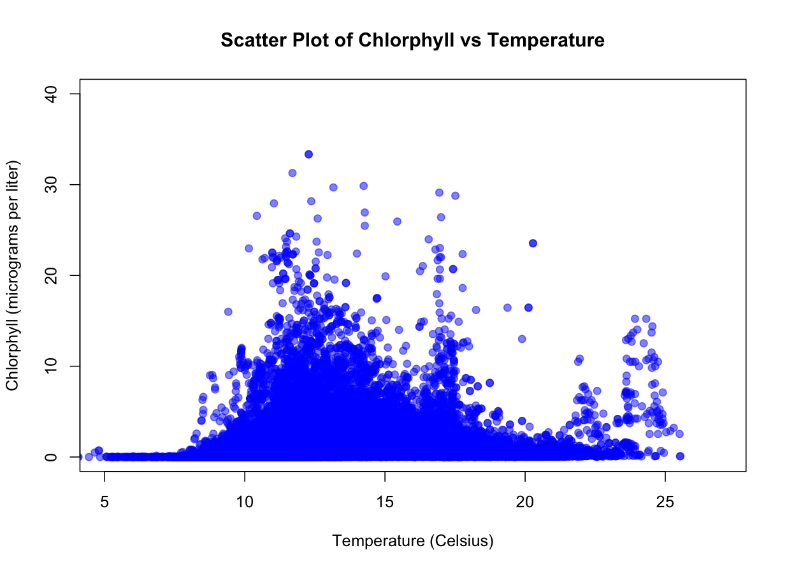
Notably, there is an interseting, Gaussian-like relationship with plankton and temperature. Given this, it invites the need to explore how increasing temperatures might influence the amount of phytoplankton.
Second, I plotted various productivity and nutrients in relation to phytoplankton and temperature.
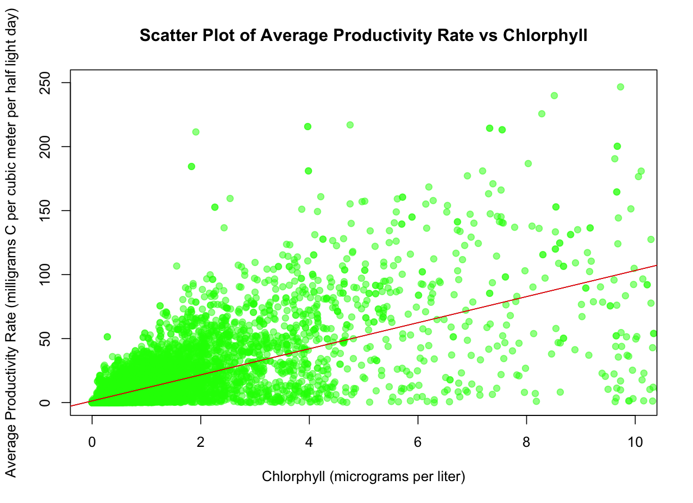
plot(bottle_data_with_years$ChlorA, bottle_data_with_years$MeanAs,
type="p",
pch=19,
xlim=c(0,10),
ylim=c(0, 250),
col=adjustcolor("green", alpha.f=0.5),
main="Scatter Plot of Average Productivity Rate vs Chlorphyll",
xlab="Chlorphyll (micrograms per liter)",
ylab="Average Productivity Rate (milligrams C per cubic meter per half light day)")
model <- lm(MeanAs ~ ChlorA, data = bottle_data_with_years)
abline(model, col = "red", lwd = 2)One of the most important indicators of the health of an ecosystem is its producutivity. Producutivity is measured in how much carbon gets absorbed by the environment. As seen in the above plot, existence of plankton is needed to reach a productivity of above 50 mg of Carbon per cubic meter per half light day. This plot contains a linear regression line that illustrate a broad overview of this relationship between plankton and productivity.
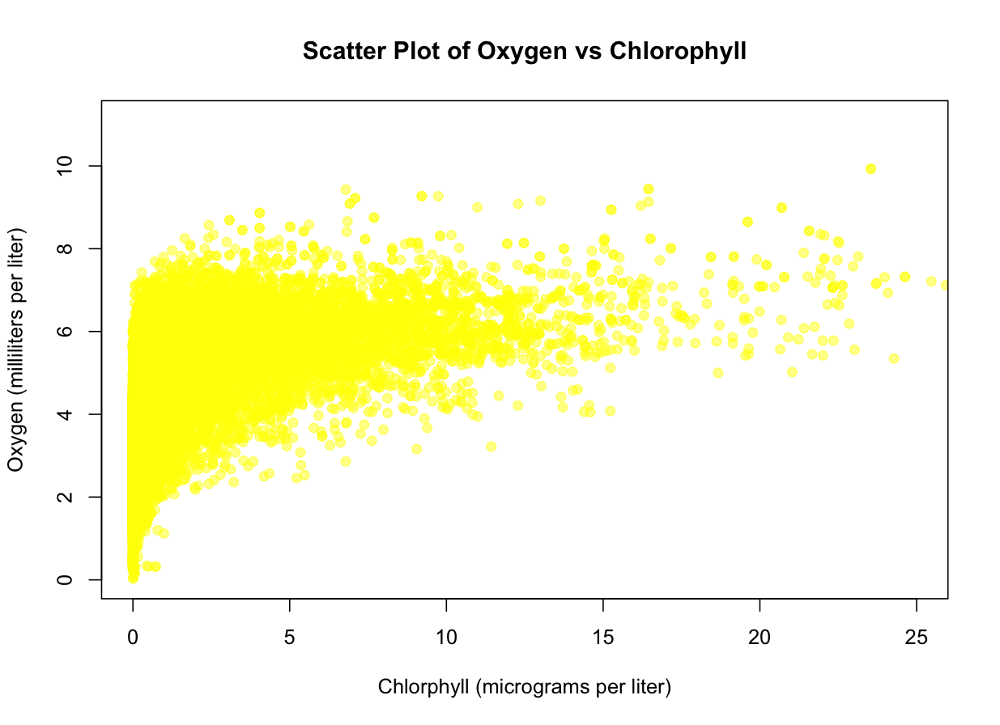
plot(bottle_data_with_years$ChlorA, bottle_data_with_years$O2ml_L,
type="p",
pch=19,
xlim=c(0,25),
col=adjustcolor("yellow", alpha.f=0.5),
main="Scatter Plot of Oxygen vs Chlorophyll",
xlab="Chlorphyll (micrograms per liter)",
ylab="Oxygen (milliliters per liter)")Due to plankton being primary producers (they conduct photosynthesis and release oxygen), there is a notable trend with how much oxygen is in the water in relation to the amount of plankton. Oxygen, of course, is necessary for all marine life that conduct cellular respiration. Without enough oxygen in the water, a marine ecosystem can become hypoxic (lack of oxygen) and cause massive die-offs. In this plot, we can see the importance plankton play in oxygen levels in an ecosystem.
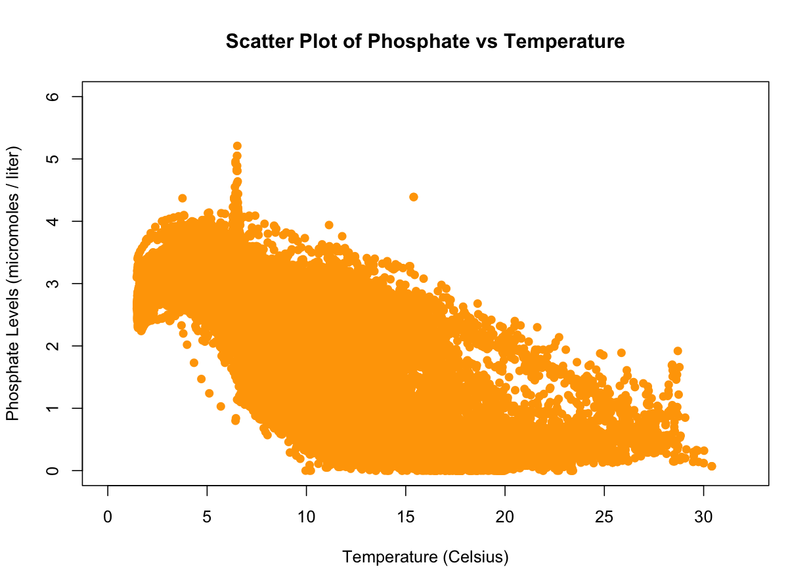
plot(bottle_data_with_years$T_degC, bottle_data_with_years$PO4uM,
type="p",
pch=19,
col="orange",
ylim=c(0, 6),
xlim=c(0, 32),
main="Scatter Plot of Phosphate vs Temperature",
xlab="Temperature (Celsius)",
ylab="Phosphate Levels (micromoles / liter)")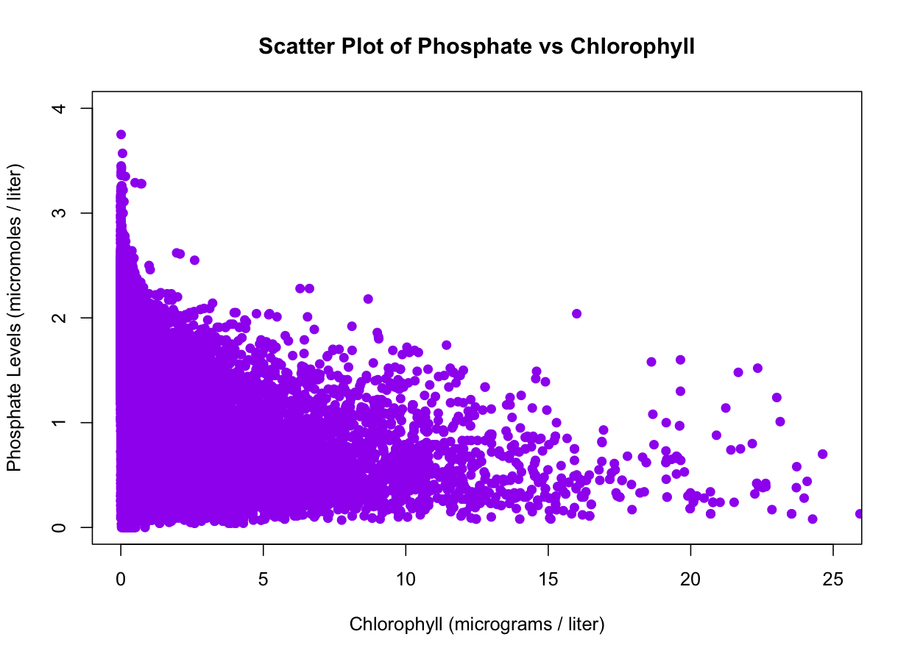
plot(bottle_data_with_years$ChlorA, bottle_data_with_years$PO4uM,
type="p",
pch=19,
col="purple",
ylim=c(0, 4),
xlim=c(0, 25),
main="Scatter Plot of Phosphate vs Chlorophyll",
xlab="Chlorophyll (micrograms / liter)",
ylab="Phosphate Levels (micromoles / liter)")Phosphate is a key nutrient that is needed for plankton growth. Therefore, we can see a unique trend where phosphate levels decline as plankton increase. This is due to the plankton absorbing the phosphate and using it for growth. Accordingly with temperature, phosphate also sees this general trend.
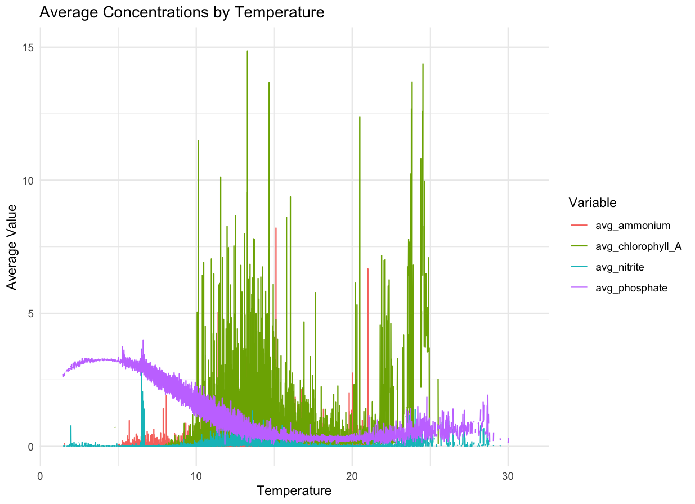
average_data <- bottle_data_with_years %>%
group_by(T_degC) %>%
summarise(
avg_phosphate = mean(PO4uM, na.rm = TRUE),
avg_nitrite = mean(NO2uM, na.rm = TRUE),
avg_chlorophyll_A = mean(ChlorA, na.rm = TRUE),
avg_ammonium = mean(NH3uM, na.rm = TRUE)
)
long_data <- average_data %>%
pivot_longer(cols = -T_degC, names_to = "Variable", values_to = "Value")
ggplot(long_data, aes(x = T_degC, y = Value, color = Variable)) +
geom_line() +
labs(title = "Average Concentrations by Temperature",
x = "Temperature",
y = "Average Value") +
theme_minimal()Zooming out, I conducted an average of plankton levels and all key nutrients against ocean temperature. In this plot we can see how these nutrients interact with each other against temperature. Notably, we can see the phosphate-plankton trend more clearly – as plankton begin to increase, we can see phosphate decline. Further, we can see the similar normal-like distribution of chorophyll across temperature. Nitrite and Ammonium are other forms of nitrogen that plankton use for growth. However, something interesting is occuring with those values. Below is a plot with chlorphyll removed, so we can more easily see ammonium and nitrite. Notably, they mirror chlorophyll levels. This is because these nutrients get recycled more quickly as there are more plankton in the water. This is because zooplankton – and other organisms that eat phytoplankton – release ammonium as a byproduct. Therefore, there is rapid recycling of these nitogrens when plankton levels are high.
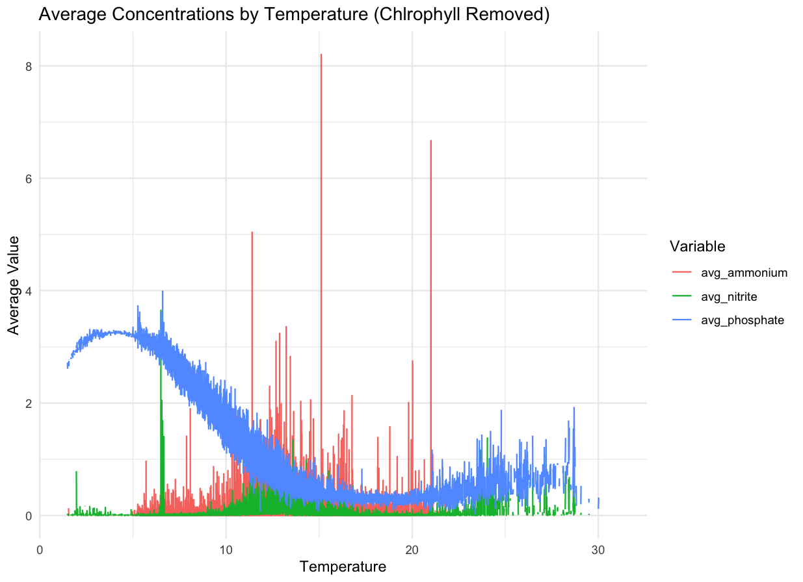
average_data <- bottle_data_with_years %>%
group_by(T_degC) %>%
summarise(
avg_phosphate = mean(PO4uM, na.rm = TRUE),
avg_nitrite = mean(NO2uM, na.rm = TRUE),
avg_ammonium = mean(NH3uM, na.rm = TRUE)
)
long_data <- average_data %>%
pivot_longer(cols = -T_degC, names_to = "Variable", values_to = "Value")
ggplot(long_data, aes(x = T_degC, y = Value, color = Variable)) +
geom_line() +
labs(title = "Average Concentrations by Temperature",
x = "Temperature",
y = "Average Value") +
theme_minimal()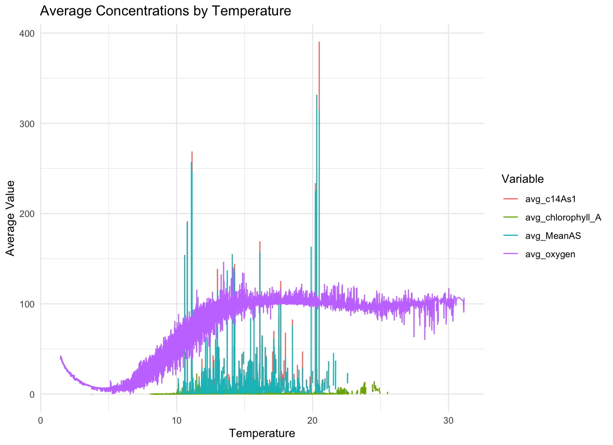
average_data <- bottle_data_with_years %>%
group_by(T_degC) %>%
summarise(
avg_c14As1 = mean(c14As1, na.rm = TRUE),
avg_MeanAS = mean(MeanAS, na.rm = TRUE),
avg_oxygen = mean(O2Sat, na.rm = TRUE),
avg_chlorophyll_A = mean(ChlorA, na.rm = TRUE)
)
long_data <- average_data %>%
pivot_longer(cols = -T_degC, names_to = "Variable", values_to = "Value")
ggplot(long_data, aes(x = T_degC, y = Value, color = Variable)) +
geom_line() +
labs(title = "Average Concentrations by Temperature",
x = "Temperature",
y = "Average Value") +
theme_minimal()With regards to productivity, it can be seen that these metrics mirror chlorophyll levels. That is, carbon absorbtion (C14AS1) and average carbon absorbtion (MeanAS). Further, we can see that oxygen saturation climbs significantly when chlorophyll increases.
Models
To find what types of models to attempt to fit to this dataset I tried various methods.
To begin, I examined which predictors presented statistical significance in predicting chlorophyll levels.
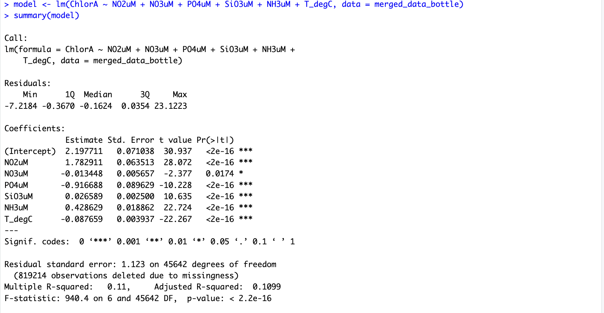
I did this process of fitting basic linear models across different predictors to see what constituted statistical significance. Further, I used my visualizations to determine what predictors I believed were necessary to include to maximize my models’ performance, while staying lightweight.
As a result of this process, I decided to include T_degC, 02ml_L, Р04uМ, SiOuM, NO2uM in my model.
Further, I noted that there seemed to be significant multicollinearity associated with the predictors. I discovered this via my visualizations and by general data analysis (i.e. playing around and looking at the dataset).
As a result, I decided that I should attempt to fit a mulitple linear regression model using ridge regression as a regularization technique.
I used the glmnet R package to accomplish this. Further, I used the caret package to perform cross-validation. See the attached code snippets.
model_data <- calcofi_data, ("ChlorA", "T_degC", "02ml_L", "Р04uМ", "SiOuM", "NO2uM")]
library(glmnet)
library(caret)
X <- as.matrix(model_data[, -1])
Y <- model_data$ChlorA
cv_model <- cv.glmnet(X, Y, alpha = 0, nfolds = 10)
best_lambda <- cv_model$lambda.min
best_lambda
[1] 0.01197111
ridge_model <- glmnet(X, Y, alpha = 0, lamdba = best_lambda)
predictions <- predict(ridge_model, s = best_lambda, newx = X)
MSE <- mean((Y - predictions)^2)
TSS <- sum((Y - mean(Y))^2)
RSS <- sum((Y - predictions)^2)
R_squared <- 1 - (RSS / TSS)
R_squared
[1] 0.4102769I conducted cross-validation with 10 folds and found that a lambda value of 0.0119 gave the best performance. Below is a graph of the cross-validation model using glmnet that shows the performance across different lamdba vlaues.
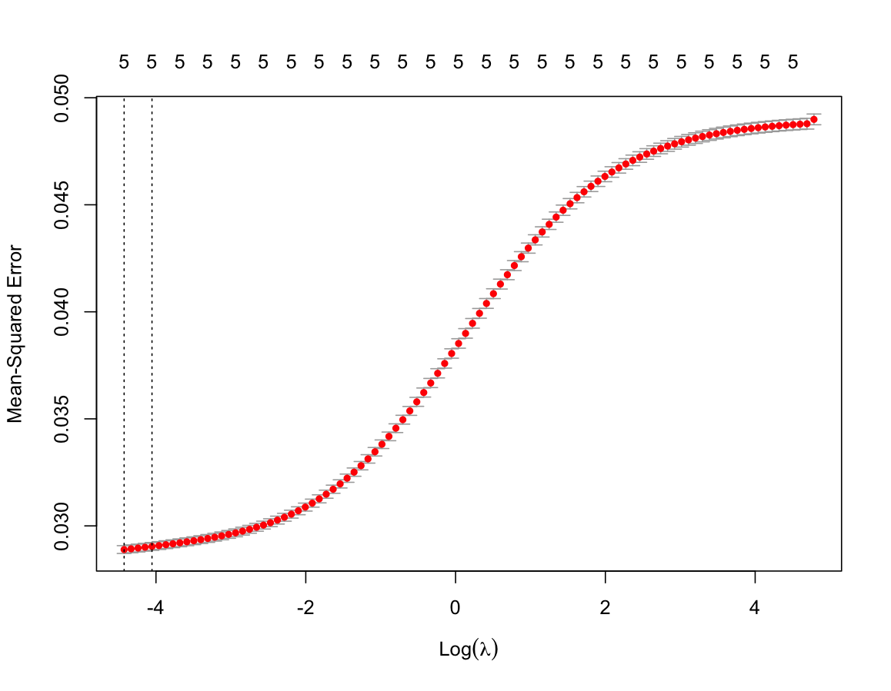
I proceeded to fit the ridge regression model and found the following coeficcients:

Finally, to analyze the model’s performance I calculated MSE and R-Squared values. I found that my model had an MSE of 0.02 and an R-Squared value of 0.41.
I attempted to improve upon these metrics by adding more predictors and changing certain predictors with squared and cubic terms, but found no significant improvement.
Secondly, I decided to use boosted trees to predict Chlorophyll. I used the xgboost R library to do this.
library(xgboost)
X <- as.matrix(calcofi_data[, c("T_degC", "02ml_L", "PO4uM", "Si03uM", "NO2uM")])
Y <- model_data$ChlorA
train_index -< createDataPartition(Y, p= 0.8, list = FALSE)
X_train -< X[train_index, ]
Y_train -< Y[train_index]
X_test -< X[-train_index, ]
Y_test <- Y[-train_index]
dtrain -< xgb.DMatrix(data = X_train, label = Y_train)
dtest <- xgb.DMatrix(data = X_test, Label = Y_test)
params <- list(
objective = "reg:squarederror",
eta = 0.1,
max_depth = 6,
subsample = 0.8,
colsample_bytree = 0.8)
xgb_model <- xgb.train(params = params,
data = dtrain,
nrounds = 100,
watchlist = list(train = dtrain, test = dtest),
early_stopping_rounds = 10,
print_every_n = 10)
# train-rmse:0.336269
# test-rmse:0.335851
# Multiple eval metrics are present. Will use test_rmse for early stopping. Will train until test_rmse hasn't improved in 10 rounds.
# [11] train-rmse:0.175816 test-rmse:0.175203
# [217 train-rmse:0.139428 test-rmse:0.139246
# [31] train-rmse:0.131957 test-rmse:0.132357
# [41]
# train-rmse:0.129534
# [51] train-rmse: 0.128166
# [61] train-rmse:0.127288
# [71]
# train-rmse: 0.126703
# [81] train-rmse:0.126188
# [91]
# train-rmse: 0.125684
# [100] train-rmse:0.125259
# test-rmse: 0.130496
# test-rmse:0.129555
# test-rmse:0.128987
# test-rmse: 0.128702
# test-rmse:0.128431
# test-rmse: 0.128202
# test-rmse:0.127977
predictions <- predictxgb_model, newdata = dtest)
mse <- mean((Y_test - predictions)^2)
mse
mse: 0.0163781
TSS <- sum((Y_test - mean(Y_test))^2)
RSS <- sum((Y_test - predictions)^2)
R_squared <- 1 - (RSS / TSS )
R_squared
R-squared: 0.6596388I used set-validation as my validation technique and trained the boosted tree model over 100 epochs with a tree depth of 6.
Using boosted trees returned better performance than my ridge regression model. This was seen via the boosted trees MSE value of 0.0164 and an R-Squared value of 0.659.
Analysis and discussion
An ocean’s ecosystem has extremely complex, interweaving relationships that can make it very difficult to accurately model. Further, there are exterior factors, such as human-released chemicals and severe weather events that can disturb an ecosystem. As a result, to find patterns or insights from the data can be challenging. However, the visualizations and models produced do provide some interesting insights into the CalCOFI dataset.
For one, how predictors change with respect to environmental factors. Ammonium, for instance, gets rapidly recycled when plankton levels are high, and therefore we can see that it mirrors chlorophyll levels fairly closely. This level of interaction can be seen across many other predictors and was discussed in the visualization section.
On another note, the extreme interaction between predictors resulted in noticeable multicollinearity among variables. This is evident in the ridge regression model, which produced a lambda value of 0.0119. Furthermore, this lambda value -— determined through cross-validation – optimally balances the bias-variance tradeoff for this dataset. Overall, this highlights the intricate and interwoven relationships that exist in ocean ecosystems.
Another key observation that can be made from the data is how plankton influence productivity levels. This is perhaps one of the most significant findings. Previously, it was mentioned how plankton are a keystone species, meaning without the functions they perform for an ecosystem, that ecosystem has a high chance of collapse. This potential threat of collapse can be seen in the produced visualizations and models. Most notably, in the graph depicting average productivity rate against chlorophyll. Ultimately, this observation is extremely significant because with minimal plankton levels come severe environmental consequences due to the minimizing of carbon absorption.
Additionally, the influence temperature has on plankton levels is significant. From the scatter plot of Chlorophyll vs Temperature, a Gaussian-like relationship can be seen between temperature and plankton. This relationship is significant as it visualizes the potential influence warming temperuatures caused by human-related greenhouse gas emissions will have on plankton populations. Further, rising temperatures cause a change in ocean stratification, which is the separation of water into distinct layers based on temperature and density. Consequently, as stratification changes, specific nutrients, such as phosphate and nitrogens, present in each layer will change. Plankton, which reside almost solely on the ocean’s surface layer, are influenced by this stratification. Notably, this phenomena can be seen in the aforementioned Chlorophyll vs Temperature plot and explains the decline in plankton populations as temperatures increase.
All together, warming temperatures can disrupt the ecological processes that exist and could have drastic ramifications on the entire planet. Importantly, the models and visualizations I produced warn of these potential catastrophic problems and their ensuing consequences. That is, as ocean temperatures continue to rise, ocean stratification will become more pronounced, leading to a decline in nutrient levels and plankton populations. Consequently, fewer plankton will result in a less productive ecosystem and reduced oxygen levels. Furthermore, with fewer plankton to absorb carbon, more greenhouse gases will remain in the atmosphere, causing further warming, which will, in turn, lead to further plankton population decline, reducing carbon absorption even more. This creates a devastating positive feedback loop for the environment. On top of all this, ocean ecosystems could develop hypoxic (low-oxygen) zones, which could lead to massive die-offs of marine life that threaten ocean ecosystems even more and cause damage to the world’s fishing economies.
Ultimately, by analyzing my visualizations and models, I can conclude that my previoulsy stated hypothesis shows a strong indication of being valid. However, more data needs to be collected and various shortcomings of the CalCOFI dataset need to be addressed.
The shortcomings of the CalCOFI dataset include the following: First, it is unclear what types of ecosystems exist at certain sampling locations and what levels of biodiversity they contain. This uncertainty makes it difficult to determine what should be expected from specific sampling locations. Further, it is unclear how the movement of biotic and abiotic factors through ocean currents causes one sampling location’s ecosystem to influence another. Additionally, it is uncertain whether the sampling locations can be adequately compared with each other—for example, whether sampling locations along the California coast can be compared to those further out in the ocean. Lastly, it is unclear how much influence ecosystems receive from land-based runoff of chemicals. This specifically complicates the understanding of certain relationships, as runoff chemicals can act as confounding variables in ecosystem sampling. Therefore, if further analysis were to be conducted, a metric quantifying the presence of runoff chemicals would be valuable.
Impact
The model and visualizations I produced could have a wide-ranging impact on environmental practices and policy. They could serve as the rallying-cry for more immediate action to mitigate the human destruction of the planet. Further, these visualizations and models could serve to educate the populace on the importance of phytoplankton to the planet and how our actions contribute to their potential collapse.
Additionally, significant change regarding climate could provide a healthier environment for these ocean ecosystems, Californians, and the world. Significant change could also bring benefical economic consequences. This could be from the prevention of the economic costs to deal with climate change. For example, not having to spend the billions of dollars necessary to repair the climate-change fueled disasters – such as the wildfires and mudslides – that have already stricken Southern California this year. On the other hand, promoting a green economy could produce millions of jobs and billions in economic activity (citation).
Ultimately, there are many avenues in which the earth’s climate is being affected by humans. However, the potential destruction of phytoplankton – one of the lungs of our planet – will have a devastating impact on life as we know it.